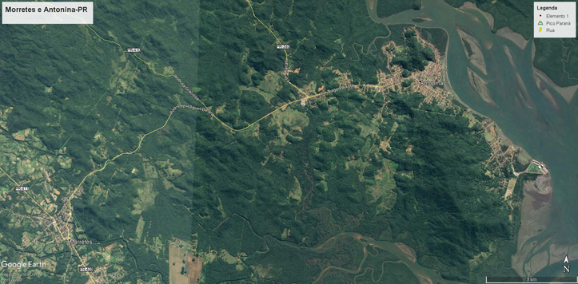
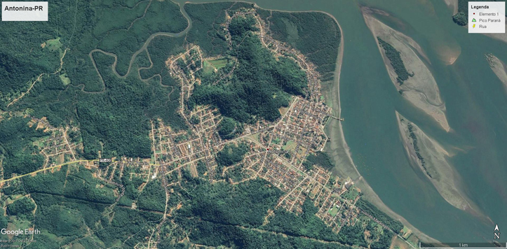
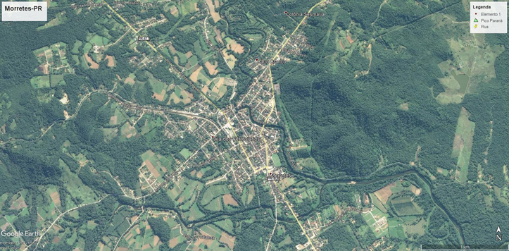

História
Contamos com a sua colaboração para que ela se torne a mais
fidedigna possível.
Contacte-nos através do e-mail: felipenicolau@felipenicolau.com.br
- Dezembro de 2017.
A Família Doker veio para
o Brasil procedente da Síria da região conhecida como "Mar
de Azeitonas" (Kafarak).
A data aproximada da chegada ao Brasil foi em torno de 1909, e veio junto
com eles sua filha
primogênita Maria que tinha na época 12 anos de idade (que faleceu
em 1985 com 88 anos).
Eram dois irmãos, Felipe
(Habib) e Pedro (não temos o seu nome original).
No Brasil eles adotaram o seus nomes acrescidos do sobrenome Nicolau.
Felipe ficou radicado em Antonina, e se tornou um próspero comerciante,
enquanto Pedro se radicou em Curitiba, onde criou o "Moinhos Curitibanos",
atualmente faz parte do "Soho Rebouças" de Curitiba-PR.
Maria, Miguel e José ficaram
em Antonina.
Jorge e Dib se radicaram em Paranaguá.
Esdid faleceu devido um acidente.
João Nicolau, filho de
Felipe, se radicou na cidade de Morretes, próxima a Antonina
onde conheceu sua esposa, Zeli Visini e tiveram sete filhos.
Imagens extraídas do Google Earth:
Antonina e Morretes - PR -
Brasil 
Antonina - PR - Brasil

Morretes - PR - Brasil
